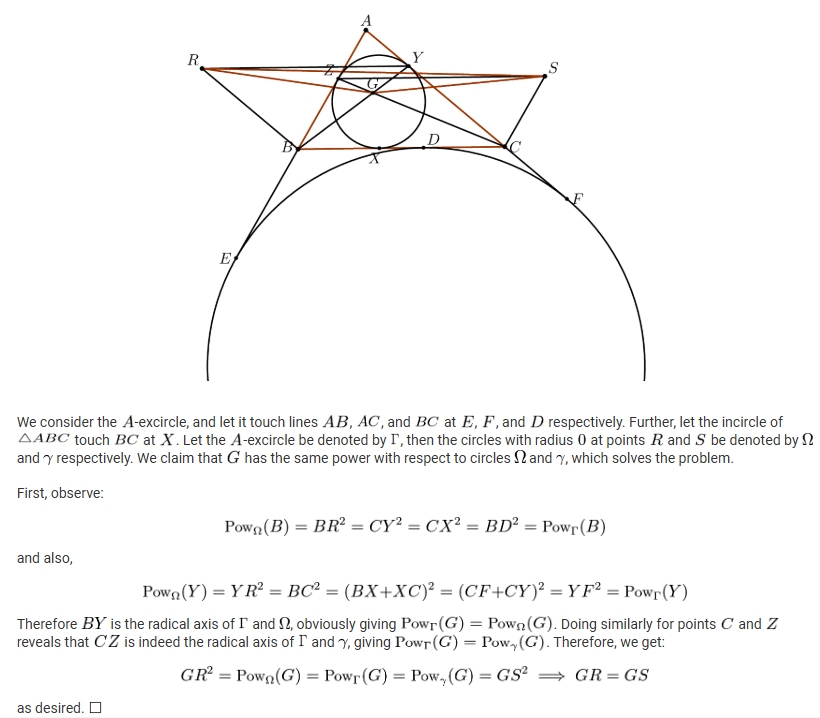

Problem
Let $ABC$ be a triangle. The incircle of $ABC$ touches the sides $AB$ and $AC$ at the points $Z$ and $Y$, respectively. Let $G$ be the point where the lines $BY$ and $CZ$ meet, and let $R$ and $S$ be points such that the two quadrilaterals $BCYR$ and $BCSZ$ are parallelogram. Prove that $GR=GS$.
Solution
WIP!!! The source is IMOSL 2009 G3.
